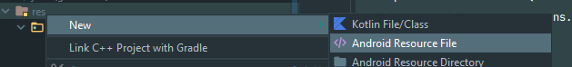
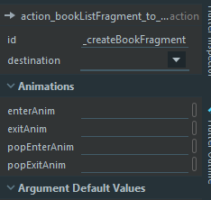

Activity vers Fragments
Préparation
Reprenez le TP précédent.
Nous avions fait une Activity par cas d'utilisations.
Aujourd'hui, nous allons faire un Fragment par cas d'utilisation.
Dans un premier temps, nous allons faire migrer tout ce qu'il y a dans une Activity vers un Fragment, en ignorant pour l'instant le routage.
Après avoir convertit, on mettra en place le routage avec le Navigation component et éventuellement avec Navigation safe args pour assurer le type-safety.
Enfin, nous allons extraire les dépendances et mettre en place des ViewModelFactory.
Tâche : Migration
Commençons par le plus "indépendant", soit CreateBookActivity :
- Faites un
CreateBookFragmentavec le wizard d'Android Studio :

Gardez uniquement :
x
class CreateBookFragment : Fragment() {override fun onCreateView(inflater: LayoutInflater, container: ViewGroup?,savedInstanceState: Bundle?): View? {// Inflate the layout for this fragmentreturn inflater.inflate(R.layout.fragment_create_book, container, false)}}Dans l'XML, copiez/collez de
activity_create_book.xmlversfragment_create_book.xmlet changez letools:context.x
<layout xmlns:android="http://schemas.android.com/apk/res/android"xmlns:app="http://schemas.android.com/apk/res-auto"xmlns:tools="http://schemas.android.com/tools"><data><variablename="viewModel"type="com.ismin.android.CreateBookViewModel" /></data><androidx.constraintlayout.widget.ConstraintLayoutandroid:layout_width="match_parent"android:layout_height="match_parent"tools:context=".CreateBookFragment"> <!-- CHANGEZ ICI --><EditTextandroid:id="@+id/a_create_book_edt_title"... /><EditTextandroid:id="@+id/a_create_book_edt_author"... /><EditTextandroid:id="@+id/a_create_book_edt_date"... /><Buttonandroid:id="@+id/a_create_book_btn_save"... /><TextViewandroid:id="@+id/a_create_book_txv_author"... /><TextViewandroid:id="@+id/a_create_book_txv_title"... /><TextViewandroid:id="@+id/a_create_book_txv_date"... /></androidx.constraintlayout.widget.ConstraintLayout></layout>Faites le DataBinding, mettez le ViewModel et l'observer (l'action sera vide pour l'instant) :
x
class CreateBookFragment : Fragment() {private lateinit var binding : FragmentCreateBookBindingprivate val viewModel by viewModels<CreateBookViewModel>()override fun onCreateView(inflater: LayoutInflater, container: ViewGroup?,savedInstanceState: Bundle?): View? {binding = FragmentCreateBookBinding.inflate(inflater, container, false)binding.viewModel = viewModelbinding.lifecycleOwner = viewLifecycleOwner // Notez la différence iciviewModel.saveBook.observe(viewLifecycleOwner, { // Notez la différence iciit?.let {viewModel.toBook()?.let { book ->TODO("Create a book and go back")}viewModel.saveBookDone()}})return binding.root}}
- Supprimez
CreateBookActivityet son XML, ainsi que toute référence à ces fichiers. (Voir dansAndroidManifest.xml)
Cela suffira pour l'instant. Passons au MainActivity.
Actuellement, MainActivity remplit la fonction d'afficher la liste. Comme, nous utilisons maintenant des Fragment, MainActivity va devenir un hôte pour naviguer entre différent fragments.
Par conséquent, allons migrer le contenu dans un fragment ayant un nom plus approprié :
Créez un
BookListFragmentavec le wizard d'Android StudioFaites comme précédemment (modifiez l'XML et faites le binding)
xxxxxxxxxx<layout xmlns:android="http://schemas.android.com/apk/res/android"xmlns:app="http://schemas.android.com/apk/res-auto"xmlns:tools="http://schemas.android.com/tools"><data><variablename="viewModel"type="com.ismin.android.MainViewModel" /></data><androidx.constraintlayout.widget.ConstraintLayoutandroid:layout_width="match_parent"android:layout_height="match_parent"tools:context=".BookListFragment"> <!-- CHANGEZ ICI --><androidx.recyclerview.widget.RecyclerViewandroid:id="@+id/a_main_rcv_books"android:layout_width="0dp"android:layout_height="0dp"app:books="@{viewModel.books}"app:layout_constraintBottom_toBottomOf="parent"app:layout_constraintEnd_toEndOf="parent"app:layout_constraintStart_toStartOf="parent"app:layout_constraintTop_toTopOf="parent"tools:itemCount="10"tools:listitem="@layout/row_book" /><Buttonandroid:id="@+id/a_main_btn_creation"android:layout_width="wrap_content"android:layout_height="wrap_content"android:onClick="@{() -> viewModel.goToCreation()}"android:text="Creation"app:layout_constraintBottom_toBottomOf="parent"app:layout_constraintEnd_toEndOf="parent" /></androidx.constraintlayout.widget.ConstraintLayout></layout>xxxxxxxxxxclass BookListFragment : Fragment() {private val viewModel by viewModels<MainViewModel>()private lateinit var binding: FragmentBookListBindingoverride fun onCreateView(inflater: LayoutInflater, container: ViewGroup?,savedInstanceState: Bundle?): View? {binding = FragmentBookListBinding.inflate(inflater, container, false)binding.viewModel = viewModelbinding.lifecycleOwner = viewLifecycleOwner // Notez la différence iciviewModel.goToCreation.observe(viewLifecycleOwner, { // Notez la différence iciit?.let {TODO("Go to CreateBookFragment")viewModel.goToCreationDone()}})binding.aMainRcvBooks.adapter = BookAdapter()val linearLayoutManager = LinearLayoutManager(context) // Notez la différence icibinding.aMainRcvBooks.layoutManager = linearLayoutManagerval dividerItemDecoration = DividerItemDecoration(context, linearLayoutManager.orientation) // icibinding.aMainRcvBooks.addItemDecoration(dividerItemDecoration)return binding.root}}
Renommez (refactorisez)
MainViewModelparBookListViewModel
Dans le
activity_main.xml, nous allons désactiver le DataBinding et supprimez son contenu. (On le purge.)xxxxxxxxxx<androidx.constraintlayout.widget.ConstraintLayoutxmlns:android="http://schemas.android.com/apk/res/android"xmlns:app="http://schemas.android.com/apk/res-auto"xmlns:tools="http://schemas.android.com/tools"android:layout_width="match_parent"android:layout_height="match_parent"tools:context=".MainActivity"></androidx.constraintlayout.widget.ConstraintLayout>Dans
MainActivity.kt, supprimez tout sauf la déclaration deonCreateet réutilisezR. :xxxxxxxxxxclass MainActivity : AppCompatActivity() {override fun onCreate(savedInstanceState: Bundle?) {super.onCreate(savedInstanceState)setContentView(R.layout.activity_main)}}Nous pourrions faire du DataBinding. Cependant, comme
MainActivityne contient pas de données, autant désactiver le DataBinding pour avoir le minimum de complexité.
Tâche : Navigation Component and SafeArgs
Préparation
Nous allons ajouter un plugin appelé safe args, qui permet de naviguer plus facilement avec des classes auto-générées.
Dans
build.gradledu projet, ajoutez le plugin au classpath :x
buildscript {ext {kotlin_version = "1.4.10"nav_version = "2.3.1"}repositories {google()jcenter()}dependencies {classpath 'com.android.tools.build:gradle:4.1.0'classpath "org.jetbrains.kotlin:kotlin-gradle-plugin:$kotlin_version"classpath "androidx.navigation:navigation-safe-args-gradle-plugin:$nav_version"}}allprojects {repositories {google()jcenter()}}task clean(type: Delete) {delete rootProject.buildDir}
Dans le
build.gradledu moduleapp, ajoutez les dépendances de Navigation Component :xxxxxxxxxxplugins {id 'com.android.application'id 'kotlin-android'id 'kotlin-android-extensions'id 'kotlin-kapt'id 'androidx.navigation.safeargs.kotlin' // Ajoutez}// ...dependencies {implementation fileTree(dir: "libs", include: ["*.jar"])implementation "org.jetbrains.kotlin:kotlin-stdlib:$kotlin_version"// Core KTXimplementation 'androidx.core:core-ktx:1.3.2'// Navigationimplementation "androidx.navigation:navigation-fragment-ktx:$nav_version"implementation "androidx.navigation:navigation-ui-ktx:$nav_version"// Activityimplementation "androidx.activity:activity-ktx:1.1.0"implementation 'androidx.legacy:legacy-support-v4:1.0.0'// Fragmentimplementation "androidx.fragment:fragment-ktx:1.2.5"// Lifecycledef lifecycle_version = '2.2.0'implementation "androidx.lifecycle:lifecycle-livedata-ktx:$lifecycle_version"implementation "androidx.lifecycle:lifecycle-viewmodel-ktx:$lifecycle_version"implementation 'androidx.appcompat:appcompat:1.2.0'implementation 'androidx.constraintlayout:constraintlayout:2.0.2'implementation 'androidx.recyclerview:recyclerview:1.1.0'testImplementation 'junit:junit:4.13.1'androidTestImplementation 'androidx.test.ext:junit:1.1.2'androidTestImplementation 'androidx.test.espresso:espresso-core:3.3.0'}
Créez un graphe de navigation
Ajoutez une ressource de type Navigation :


Remarquez immédiatement l'interface. Ajoutez les pages avec
 .
.Ajoutez
BookListFragmentetCreateBookFragmentFaites le lien entre
BookListFragmentetCreateBookFragment
Notez le nom de l'action action_bookListFragment_to_createBookFragment. Navigation Component et Safe Args génèreront automatiquement un une classe permettant d'effectuer cette action.
Si cela affiche "Preview Unavailable", mettez vous en mode Code, ajoutez
tools:layoutpour chaquefragmentet faites correspondre avec la ressource appropriée :xxxxxxxxxx<navigation xmlns:android="http://schemas.android.com/apk/res/android"xmlns:app="http://schemas.android.com/apk/res-auto"xmlns:tools="http://schemas.android.com/tools"android:id="@+id/nav_graph"app:startDestination="@id/bookListFragment"><fragmentandroid:id="@+id/bookListFragment"android:name="com.ismin.android.BookListFragment"android:label="BookListFragment"tools:layout="@layout/fragment_book_list"><actionandroid:id="@+id/action_bookListFragment_to_createBookFragment"app:destination="@id/createBookFragment" /></fragment><fragmentandroid:id="@+id/createBookFragment"android:name="com.ismin.android.CreateBookFragment"android:label="CreateBookFragment"tools:layout="@layout/fragment_create_book"/></navigation>
Revenez au
activity_main.xml, il faut maintenant mettre unfragmentdédié à la navigation :xxxxxxxxxx<androidx.constraintlayout.widget.ConstraintLayout xmlns:android="http://schemas.android.com/apk/res/android"xmlns:app="http://schemas.android.com/apk/res-auto"xmlns:tools="http://schemas.android.com/tools"android:layout_width="match_parent"android:layout_height="match_parent"tools:context=".MainActivity"><fragmentandroid:id="@+id/nav_host_fragment"android:name="androidx.navigation.fragment.NavHostFragment"android:layout_width="0dp"android:layout_height="0dp"app:defaultNavHost="true"app:layout_constraintBottom_toBottomOf="parent"app:layout_constraintLeft_toLeftOf="parent"app:layout_constraintRight_toRightOf="parent"app:layout_constraintTop_toTopOf="parent"app:navGraph="@navigation/nav_graph" /></androidx.constraintlayout.widget.ConstraintLayout>Revenez dans le
MainActivity, liez la navigation avec le graphe et activez la navigation arrière :xxxxxxxxxxpackage com.ismin.androidimport android.os.Bundleimport androidx.appcompat.app.AppCompatActivityimport androidx.navigation.findNavControllerimport androidx.navigation.ui.NavigationUIclass MainActivity : AppCompatActivity() {override fun onCreate(savedInstanceState: Bundle?) {super.onCreate(savedInstanceState)setContentView(R.layout.activity_main)val navController = findNavController(R.id.nav_host_fragment)NavigationUI.setupActionBarWithNavController(this, navController)}override fun onSupportNavigateUp(): Boolean {val navController = this.findNavController(R.id.nav_host_fragment)return navController.navigateUp()}}
Direction BookListFragment vers CreateBookFragment
Dans
BookListFragment, effectuez la navigation avecfindNavController()et la classe généréBookListFragmentDirections.x
viewModel.goToCreation.observe(viewLifecycleOwner, {it?.let {findNavController().navigate(BookListFragmentDirections.actionBookListFragmentToCreateBookFragment())viewModel.goToCreationDone()}})Si vous ne trouvez pas la classe
BookListFragmentDirections, compilez. Cela génèrera la classe.
Direction CreateBookFragment vers BookListFragment
Navigation Component est actuellement une stack de pages. Pour revenir en arrière, il suffit de "pop".
x
viewModel.toBook()?.let { book -> findNavController().popBackStack() }Créer un livre
Avec navigation component, il n'est pas possible d'envoyer des données lorsque l'on souhaite revenir en arrière.
Pourquoi ?
Simplement, parce que l'envoi de données ne sert qu'à modifier l'agencement du Fragment, soit uniquement dans une seule direction.
Imaginez une page Web. Lorsque l'on revient en arrière, il n'y a pas de création de livre à ce que je sache ?
Actuellement, notre architecture est couplé, c'est-à-dire, que pour accéder au bookshelf (un service de bas niveau), il faut le récupérer du parent (un composant de haut niveau).
Par conséquent, on peut :
- Injecter
bookshelfen singleton et ajouter un livre, cependant, cela notifie pas un changement dans la liste (à moins d'utiliser Room, qui permet d'écouter les changements).
- Faire un
ViewModelau niveau de l'Activityet faire passer leViewModelavecrequireActivity()
C'est-à-dire, qu'il est possible de récupérer le ViewModel de l'Activity qui contient notre service Bookshelf et exécuter immédiatement l'action de création.
En théorie, on opterait pour la première solution avec Room. Cependant, nous utiliserons la deuxième solution pour pouvoir tester sans Room.
Renommez (Refactorisez)
BookListViewModelenMainViewModel, car implémentation est la même. (Ouai, on annule ce que l'on a fait)Dans
MainActivity, déclarez leViewModelau niveau de la classex
private val viewModel by viewModels<MainViewModel>()
Faites le binding :
x
class MainActivity : AppCompatActivity() {lateinit var binding: ActivityMainBindingprivate val viewModel by viewModels<MainViewModel>()override fun onCreate(savedInstanceState: Bundle?) {super.onCreate(savedInstanceState)binding = ActivityMainBinding.inflate(layoutInflater)binding.viewModel = viewModelsetContentView(binding.root)val navController = findNavController(R.id.nav_host_fragment)NavigationUI.setupActionBarWithNavController(this, navController)}override fun onSupportNavigateUp(): Boolean {val navController = this.findNavController(R.id.nav_host_fragment)return navController.navigateUp()}}xxxxxxxxxx<layout xmlns:android="http://schemas.android.com/apk/res/android"xmlns:app="http://schemas.android.com/apk/res-auto"xmlns:tools="http://schemas.android.com/tools"><data><variablename="viewModel"type="com.ismin.android.MainViewModel" /></data><androidx.constraintlayout.widget.ConstraintLayoutandroid:layout_width="match_parent"android:layout_height="match_parent"tools:context=".MainActivity"><fragmentandroid:id="@+id/nav_host_fragment"android:name="androidx.navigation.fragment.NavHostFragment"android:layout_width="0dp"android:layout_height="0dp"app:defaultNavHost="true"app:layout_constraintBottom_toBottomOf="parent"app:layout_constraintLeft_toLeftOf="parent"app:layout_constraintRight_toRightOf="parent"app:layout_constraintTop_toTopOf="parent"app:navGraph="@navigation/nav_graph" /></androidx.constraintlayout.widget.ConstraintLayout></layout>Notez que le binding est pseudo-nécessaire, mais nous avons besoin d'appeler
viewModel, car il estlazy.Sinon, on peut exécuter
ViewModelProvider(this, MainViewModel.Factory(bookshelf)).get(MainViewModel::class.java)dans leonCreateet on éviteby viewModels.Ajoutez le
activityViewModelau niveau de la classeBookListFragmentet injectez avecownerProducer = { requireActivity() }:xxxxxxxxxxclass BookListFragment : Fragment() {private val activityViewModel by viewModels<MainViewModel> (ownerProducer = { requireActivity() })private lateinit var binding: FragmentBookListBindingoverride fun onCreateView(inflater: LayoutInflater, container: ViewGroup?,savedInstanceState: Bundle?): View? {binding = FragmentBookListBinding.inflate(inflater, container, false)binding.viewModel = activityViewModelbinding.lifecycleOwner = viewLifecycleOwneractivityViewModel.goToCreation.observe(viewLifecycleOwner, {it?.let {findNavController().navigate(BookListFragmentDirections.actionBookListFragmentToCreateBookFragment())activityViewModel.goToCreationDone()}})binding.aMainRcvBooks.adapter = BookAdapter()val linearLayoutManager = LinearLayoutManager(context)binding.aMainRcvBooks.layoutManager = linearLayoutManagerval dividerItemDecoration = DividerItemDecoration(context, linearLayoutManager.orientation)binding.aMainRcvBooks.addItemDecoration(dividerItemDecoration)return binding.root}}Ajoutez le
activityViewModelau niveau de la classe, injectez avecownerProducer = { requireActivity() }et effectuer l'action danssaveBook:xxxxxxxxxx@AndroidEntryPointclass CreateBookFragment : Fragment() {private lateinit var binding: FragmentCreateBookBindingprivate val viewModel by viewModels<CreateBookViewModel>()private val activityViewModel by viewModels<MainViewModel> (ownerProducer = { requireActivity() })override fun onCreateView(inflater: LayoutInflater, container: ViewGroup?,savedInstanceState: Bundle?): View? {binding = FragmentCreateBookBinding.inflate(inflater, container, false)binding.viewModel = viewModelbinding.lifecycleOwner = viewLifecycleOwnerviewModel.saveBook.observe(viewLifecycleOwner, {it?.let {viewModel.toBook()?.let { book ->activityViewModel.addBook(book) // icifindNavController().popBackStack()}viewModel.saveBookDone()}})return binding.root}}
Conclusion
Nous avons pu supporter Navigation Component en faisant :
- Des fragments (captain obvious)
- Un graphe de navigation
- Le lien entre
MainActivityet le graphe de navigation - Des actions de navigation
- Les invocations de
popBackStacketnavigate
Tâche : Injection de dépendance avec Hilt
Extraction des dépendances et découplage
Actuellement, notre architecture est couplé. MainViewModel possède un Bookshelf qui est directement instancié dans le ViewModel.
La première chose à faire est de l'extraire.
Pour cela, revenez dans MainViewModel et placez le bookshelf en paramètre de constructeur :
x
class MainViewModel(private val bookshelf: Bookshelf) : ViewModel() { private val theLordOfTheRings = Book( // ...Cette modification empêche d'utiliser by viewModels. Pour régler ce problème, on fait une classe Factory (créateur de classe), qui permet d'injecter les dépendances dans le ViewModel.
Faites le Factory :
x
class MainViewModel(private val bookshelf: Bookshelf) : ViewModel() { private val theLordOfTheRings = Book( // ... class Factory( private val bookshelf: Bookshelf, ) : ViewModelProvider.Factory { @Suppress("UNCHECKED_CAST") override fun <T : ViewModel?> create(modelClass: Class<T>): T { return MainViewModel(bookshelf) as T } }}Afin de ne pas polluer les classes, mettez toujours les factories en dernier.
Revenez dans BookListFragment, et, de la même manière que nous avons injecté avec requireParentFragment, on utilise directement le Factory :
x
class MainActivity : AppCompatActivity() { private val bookshelf = Bookshelf() // On le met temporairement ici private val viewModel by viewModels<MainViewModel> { BookListViewModel.Factory(bookshelf) }Vous remarquez immédiatement que, cette fois-ci, Fragment est couplé à Bookshelf. Une solution de faire un Singleton en utilisant le mot clé object à la place de class dans Bookshelf. Cependant, cela ignore complètement le lifecycle de l'application.
Une autre technique est d'utiliser Dagger qui permet l'injection de dépendances liés à des composants. Ces composants Dagger sont liés aux lifecycles des composants Android.
Cependant, Dagger est actuellement fastidieux pour la création de ces composants. Par conséquent, on utilisera Hilt implémente Dagger et qui possède déjà ces composants.
Préparation
Ajoutez le plugin Hilt au projet Android :
x
buildscript { ext { kotlin_version = '1.4.10' nav_version = '2.3.1' hilt_version = '2.29.1-alpha' } repositories { google() jcenter() } dependencies { classpath 'com.android.tools.build:gradle:4.1.0' classpath "org.jetbrains.kotlin:kotlin-gradle-plugin:$kotlin_version" classpath "androidx.navigation:navigation-safe-args-gradle-plugin:$nav_version" classpath "com.google.dagger:hilt-android-gradle-plugin:$hilt_version" }}Activez le plugin dans le module app et ajoutez les dépendances :
x
plugins { id 'com.android.application' id 'kotlin-android' id 'kotlin-android-extensions' id 'kotlin-kapt' id 'androidx.navigation.safeargs.kotlin' id 'dagger.hilt.android.plugin'}// ...dependencies { implementation fileTree(dir: "libs", include: ["*.jar"]) implementation "org.jetbrains.kotlin:kotlin-stdlib:$kotlin_version" // Core KTX implementation 'androidx.core:core-ktx:1.3.2' // Navigation implementation "androidx.navigation:navigation-fragment-ktx:$nav_version" implementation "androidx.navigation:navigation-ui-ktx:$nav_version" // Activity implementation "androidx.activity:activity-ktx:1.1.0" implementation 'androidx.legacy:legacy-support-v4:1.0.0' // Fragment implementation "androidx.fragment:fragment-ktx:1.2.5" // Lifecycle def lifecycle_version = '2.2.0' implementation "androidx.lifecycle:lifecycle-livedata-ktx:$lifecycle_version" implementation "androidx.lifecycle:lifecycle-viewmodel-ktx:$lifecycle_version" // Dagger Hilt implementation "com.google.dagger:hilt-android:$hilt_version" kapt "com.google.dagger:hilt-android-compiler:$hilt_version" implementation 'androidx.appcompat:appcompat:1.2.0' implementation 'androidx.constraintlayout:constraintlayout:2.0.2' implementation 'androidx.recyclerview:recyclerview:1.1.0' testImplementation 'junit:junit:4.13.1' androidTestImplementation 'androidx.test.ext:junit:1.1.2' androidTestImplementation 'androidx.test.espresso:espresso-core:3.3.0'}Faire une Application injectable
Créez une classe
AndroidApplicationqui hérite deApplicationet l'annotez avecHiltAndroidApp.xxxxxxxxxx// AndroidApplication@HiltAndroidAppclass AndroidApplication: Application()Dans le
AndroidManifest.xml, utilisez la classeAndroidApplicationxxxxxxxxxx<manifest xmlns:android="http://schemas.android.com/apk/res/android"package="com.ismin.android"><!-- ICI: android:name=".AndroidApplication" --><applicationandroid:name=".AndroidApplication"android:allowBackup="true"android:icon="@mipmap/ic_launcher"android:label="@string/app_name"android:roundIcon="@mipmap/ic_launcher_round"android:supportsRtl="true"android:theme="@style/AppTheme"><activity android:name="com.ismin.android.MainActivity"><intent-filter><action android:name="android.intent.action.MAIN" /><category android:name="android.intent.category.LAUNCHER" /></intent-filter></activity></application></manifest>
Faire une Activity injectable
Annotez
MainActivityavec@AndroidEntryPointxxxxxxxxxx@AndroidEntryPointclass MainActivity : AppCompatActivity() {// ...
Faire le module d'injection
Un module décrit comment on injecte une dépendance.
Par exemple, si l'injection est compliqué cela peut prendre cette forme :
x
@Module@InstallIn(ApplicationComponent::class)object DataModule { @ExperimentalSerializationApi @Provides @Singleton fun provideBookshelfDataSource(client: Lazy<OkHttpClient>): BookshelfDataSource { return Retrofit.Builder() .baseUrl(BookshelfDataSource.BASE_URL) .client(client.get()) .addConverterFactory( Json { ignoreUnknownKeys = true }.asConverterFactory( BookshelfDataSource.CONTENT_TYPE.toMediaType() ) ) .build() .create(BookshelfDataSource::class.java) // Un builder } @Provides @Singleton fun provideHttpClient() = OkHttpClient() // Une simple instanciation @Singleton @Provides fun provideRoomDatabase(@ApplicationContext context: Context): LocalDataSource { return Room.databaseBuilder( context, LocalDataSource::class.java, "app.db" ).build() // Un builder } @Singleton @Provides fun provideBookDao(local: Lazy<LocalDataSource>): BookDao { return local.get().bookDao() // Un getter }}Pour l'instant, nous allons faire un ServiceModule qui s'injectera au niveau de l'application (ou singleton) :
x
@Module@InstallIn(ApplicationComponent::class)object ServiceModule { @Provides @Singleton fun provideBookshelf(): Bookshelf { return Bookshelf() }}D'ailleurs, autant initialiser les livres à ce niveau. Déplacez les livres dans le provider :
x
@Module@InstallIn(ApplicationComponent::class)object ServiceModule { @Provides @Singleton fun provideBookshelf(): Bookshelf { val bookshelf = Bookshelf() val theLordOfTheRings = Book( title = "The Lord of the Rings", author = "J. R. R. Tolkien", date = "1954-02-15" ) val theHobbit = Book( title = "The Hobbit", author = "J. R. R. Tolkien", date = "1937-09-21" ) val aLaRechercheDuTempsPerdu = Book( title = "À la recherche du temps perdu", author = "Marcel Proust", date = "1927" ) bookshelf.addBook(theLordOfTheRings) bookshelf.addBook(theHobbit) bookshelf.addBook(aLaRechercheDuTempsPerdu) return bookshelf }}x
class MainViewModel(private val bookshelf: Bookshelf) : ViewModel() { private val _books = MutableLiveData<List<Book>>(emptyList()) val books: LiveData<List<Book>> get() = _books init { _books.value = bookshelf.getAllBooks() } // ...Notre MainViewModel est maintenant clean !
Passons au MainActivity.
Injecter
Pour injecter n'importe quel classe, il faut annoter le membre avec @Inject pour faire une injection par membre.
x
@AndroidEntryPointclass MainActivity : AppCompatActivity() { @Inject lateinit var bookshelf: Bookshelf // Ne peut pas être private si Hilt est utilisé private val viewModel by viewModels<MainViewModel> { MainViewModel.Factory(bookshelf) } private lateinit var binding: ActivityMainBinding // ...Comme Bookshelf possède un provider dans le ServiceModule, celui peut se faire injecter dans Activity.
Comme le provider est annoté avec @Singleton et que le module est au niveau de l'application, notre service est lié au lifecycle de l'AndroidApplication.
Conclusion
Bravo !
Vous avez mis en place des Fragments avec un routage basé sur Navigation Component.
Bonus
Folder structure
Bougeons un peu les choses :

Navigation Component Animation
Cliquez sur l'action et le menu de droite devrait apparaitre :

On optera pour :
x
app:enterAnim="@anim/nav_default_enter_anim"app:exitAnim="@anim/nav_default_exit_anim"app:popEnterAnim="@anim/nav_default_pop_enter_anim"app:popExitAnim="@anim/nav_default_pop_exit_anim"